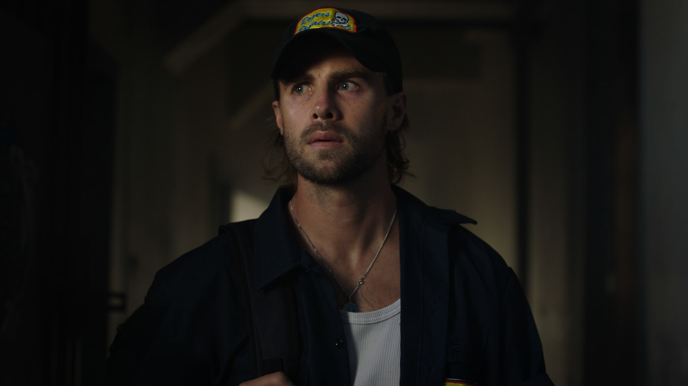
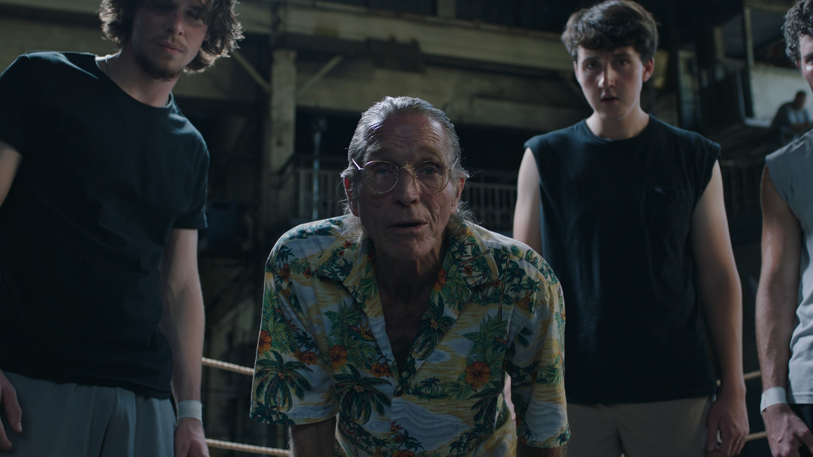
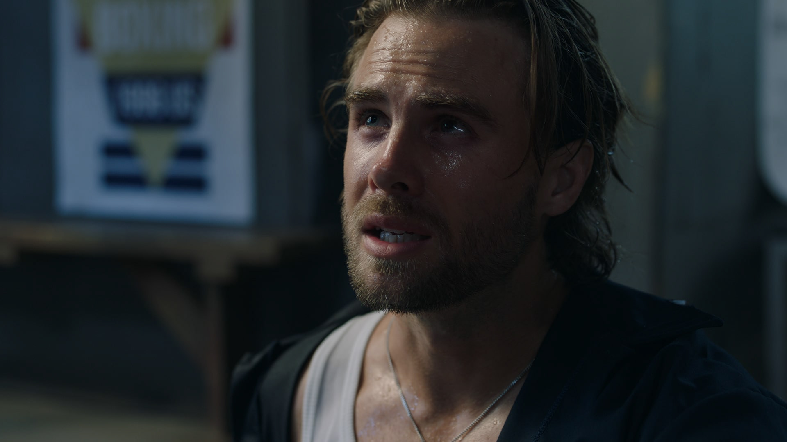
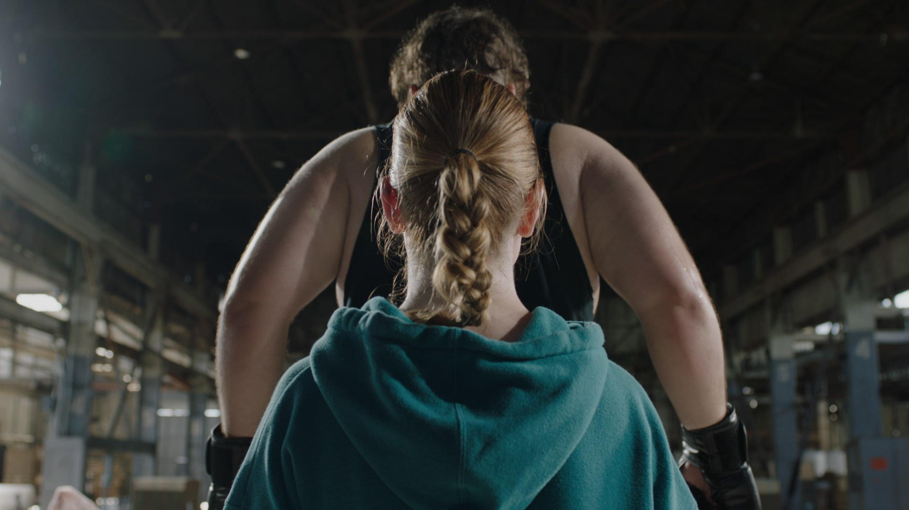
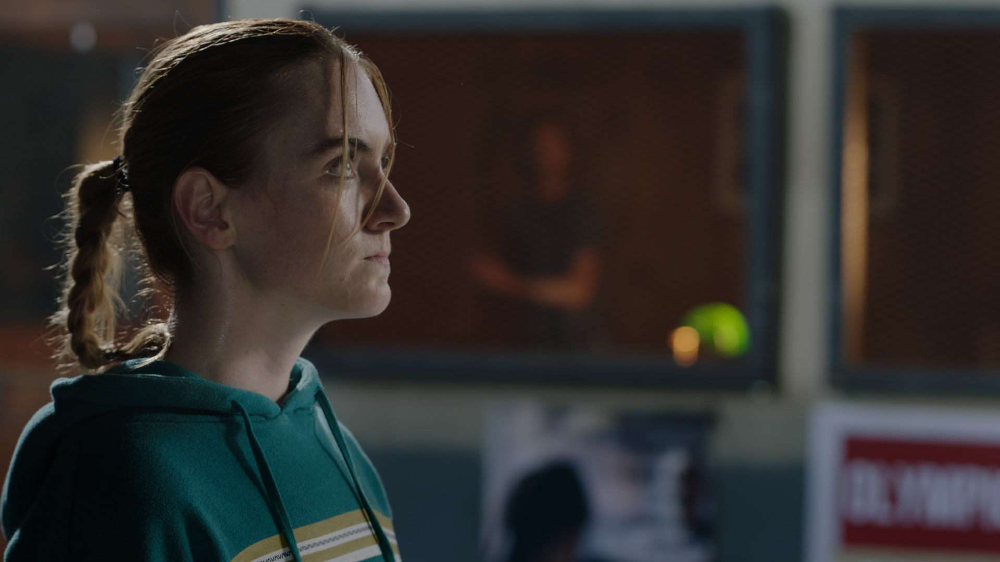
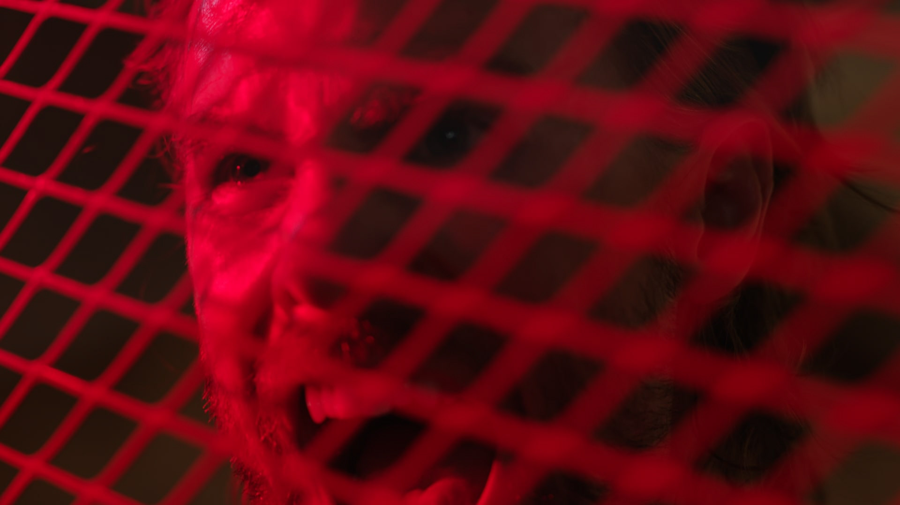

Wabi Sabi






Wabi Sabi — Opening
Wabi Sabi — Steevie Gets Punched
Wabi Sabi — The Punch
Dir. Jake Fuzak






Wabi Sabi — Opening
Wabi Sabi — Steevie Gets Punched
Wabi Sabi — The Punch
Dir. Jake Fuzak